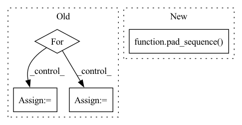

Pattern ID :19782

Before Change
mel_embs = []
for mel in mels:
mel = mel.unsqueeze(0)
mel_emb, _ = self.mel_rnn(mel)
mel_emb = mel_emb.squeeze(0)
mel_embs.append(mel_emb)
mel_embs = pad_sequence(
After Change
max_mel_len = max(mel_lens)
max_wav_len = max_mel_len * self.hop_len
pad_mels = pad_sequence(mels, batch_first=True)
pack_mels = pack_padded_sequence(
pad_mels, torch.tensor(mel_lens), batch_first=True, enforce_sorted=False
)
pack_mel_embs, _ = self.mel_rnn(pack_mels)
In pattern: SUPERPATTERN
Frequency: 3
Non-data size: 4
Instances
Fragment ID: 64483191
Project Name: yistlin/universal-vocoder
Commit Name: decd133f652564aab54717a4e8df0316421e35c0
Time: 2020-10-07
Author: yishen992@gmail.com
File Name: models/universal_vocoder.py
M Class Name: UniversalVocoder
N Class Name: UniversalVocoder
M Method Name: generate(2)
N Method Name: generate(2)
M Parent Class: nn.Module
N Parent Class: nn.Module
M File Name: models/universal_vocoder.py
N File Name: models/universal_vocoder.py
M Start Line: 78
M End Line: 108
N Start Line: 77
N End Line: 106
'>
Before Change
features = torch.zeros((len(data), n_mels, max_inp_len))
labels = torch.zeros((len(data), max_label_len))
for i in range(len(data)):
input_length = data[i][0].size(1)
label_length = data[i][3]
features[i] = torch.cat([data[i][0], torch.zeros((n_mels, max_inp_len - input_length))], dim=1)
labels[i] = torch.cat([data[i][1], torch.zeros((max_label_len - label_length))])
return features, labels, torch.tensor(input_lengths), torch.tensor(label_lengths)
After Change
specs = pad_sequence(specs, batch_first=True)
specs = torch.transpose(specs, 1, 2)
labels = pad_sequence(texts, batch_first=True)
return specs, labels, torch.tensor(input_lengths), torch.tensor(label_lengths)
'>
Fragment ID: 64483190
Project Name: ivankunyankin/quartznet-asr
Commit Name: f5499846f8525773be9824471b65f109603eed5c
Time: 2021-07-03
Author: IKunyankin@gmail.com
File Name: utils.py
M Class Name: AnonimousClass
N Class Name: AnonimousClass
M Method Name: custom_collate(1)
N Method Name: custom_collate(1)
M Parent Class:
N Parent Class:
M File Name: utils.py
N File Name: utils.py
M Start Line: 85
M End Line: 98
N Start Line: 88
N End Line: 94
'>
Before Change
mel_embs = []
for mel in mels:
mel = mel.unsqueeze(0)
mel_emb, _ = self.mel_rnn(mel)
mel_emb = mel_emb.squeeze(0)
mel_embs.append(mel_emb)
mel_embs = pad_sequence(
After Change
max_mel_len = max(mel_lens)
max_wav_len = max_mel_len * self.hop_len
pad_mels = pad_sequence(mels, batch_first=True)
pack_mels = pack_padded_sequence(
pad_mels, torch.tensor(mel_lens), batch_first=True, enforce_sorted=False
)
pack_mel_embs, _ = self.mel_rnn(pack_mels)
'>
Fragment ID: 64483220
Project Name: yistlin/universal-vocoder
Commit Name: decd133f652564aab54717a4e8df0316421e35c0
Time: 2020-10-07
Author: yishen992@gmail.com
File Name: models/universal_vocoder.py
M Class Name: UniversalVocoder
N Class Name: UniversalVocoder
M Method Name: generate(2)
N Method Name: generate(2)
M Parent Class: nn.Module
N Parent Class: nn.Module
M File Name: models/universal_vocoder.py
N File Name: models/universal_vocoder.py
M Start Line: 78
M End Line: 108
N Start Line: 77
N End Line: 106
'>
Before Change
metric_dict = {}
result_list = self._calculate_metrics(pos_len_list, topk_index)
for metric, value in zip(self.metrics, result_list):
for k in self.topk:
key = "{}@{}".format(metric, k)
metric_dict[key] = round(value[k - 1], 4)
return metric_dict
def _check_args(self):
After Change
scores_matrix = scores_tensor.view(len(user_len_list), -1)
else:
scores_list = torch.split(scores_tensor, user_len_list, dim=0)
scores_matrix = pad_sequence(scores_list, batch_first=True, padding_value=-np.inf) // nusers x items
// get topk
_, topk_index = torch.topk(scores_matrix, max(self.topk), dim=-1) // nusers x k
'>
Fragment ID: 64483198
Project Name: rucaibox/recbole
Commit Name: df66b6285fec567d1f3ca0d6ee9d9ceb71f792b6
Time: 2020-10-20
Author: 1337990880@qq.com
File Name: recbole/evaluator/topk_evaluator.py
M Class Name: TopKEvaluator
N Class Name: TopKEvaluator
M Method Name: collect(4)
N Method Name: collect(3)
M Parent Class: AbstractEvaluator
N Parent Class: AbstractEvaluator
M File Name: recbole/evaluator/topk_evaluator.py
N File Name: recbole/evaluator/topk_evaluator.py
M Start Line: 69
M End Line: 80
N Start Line: 38
N End Line: 57